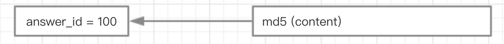

正排索引：一个未经处理的数据库中，一般是以文档ID作为索引，以文档内容作为记录。
倒排索引：Inverted index，指的是将单词或记录作为索引，将文档ID作为记录，这样便可以方便地通过单词或记录查找到其所在的文档。
1 | 倒排索引为什么叫倒排索引？ - 水無刹那的回答 - 知乎 |
一句话总结
正排索引：一个未经处理的数据库中，一般是以文档ID作为索引，以文档内容作为记录。
倒排索引：Inverted index，指的是将单词或记录作为索引，将文档ID作为记录，这样便可以方便地通过单词或记录查找到其所在的文档。
倒排索引的过程
创建倒排索引，分为以下几步：
倒排索引创建索引的流程
形成文档列表
1） lucene首先对原始文档数据进行编号（DocID），形成列表，就是一个文档列表
创建倒排索引列表
2）对文档中数据进行分词，得到词条。对词条进行编号，以词条创建索引。保存包含这些词条的文档的编号信息。
谷歌之父–> 谷歌、之父
搜索的过程
当用户输入任意的词条时，首先对用户输入的数据进行分词，得到用户要搜索的所有词条，然后拿着这些词条去倒排索引列表中进行匹配。找到这些词条就能找到包含这些词条的所有文档的编号。
然后根据这些编号去文档列表中找到文档
正排和倒排
正排索引（正向索引）
通过文档ID查文档中的各个词：url -> term，ID为关键字，后面的拉链为文档里面每个字的位置信息
正排表是以文档的ID为关键字，表中记录文档中每个字的位置信息，查找时扫描表中每个文档中字的信息直到找出所有包含查询关键字的文档。
正排表结构如图1所示，这种组织方法在建立索引的时候结构比较简单，建立比较方便且易于维护;因为索引是基于文档建立的，若是有新的文档加入，直接为该文档建立一个新的索引块，挂接在原来索引文件的后面。若是有文档删除，则直接找到该文档号文档对应的索引信息，将其直接删除。但是在查询的时候需对所有的文档进行扫描以确保没有遗漏，这样就使得检索时间大大延长，检索效率低下。
尽管正排表的工作原理非常的简单，但是由于其检索效率太低，除非在特定情况下，否则实用性价值不大。
倒排索引（反向索引）
通过某个词查到出现这个词的所有文档：term -> url，后面的拉链为出现这个词的所有文档
倒排表以字或词为关键字进行索引，表中关键字所对应的记录表项记录了出现这个字或词的所有文档，一个表项就是一个字表段，它记录该文档的ID和字符在该文档中出现的位置情况。
由于每个字或词对应的文档数量在动态变化，所以倒排表的建立和维护都较为复杂，但是在查询的时候由于可以一次得到查询关键字所对应的所有文档，所以效率高于正排表。在全文检索中，检索的快速响应是一个最为关键的性能，而索引建立由于在后台进行，尽管效率相对低一些，但不会影响整个搜索引擎的效率。
倒排表的结构图如图2：
正排索引是从文档到关键字的映射（已知文档求关键字），倒排索引是从关键字到文档的映射（已知关键字求文档）。
倒排
倒排工作原理：事先将爬虫拿到的网页数据根据关键词分组；将用户请求的关键词对应的分组返回给用户。
什么是倒排
先看看什么是正排，select * from answer where answer_id=1 。我们可以拿到 answer_id = 1 的所有信息：这就是正排。我们为某个文件、某条记录编号，通过这个编号可以拿到所需的信息：这就是正排的工作流程。
那什么是倒排呢？正排反过来就是倒排
那么，在什么情况下，我们会根据 content 获取它的 id 呢？理论上没有这种场景。当然，任何一个项目，也不会去维护这么一种索引关系（最起码 content 这个 key 实在太大了）。
但是，我们或许有这么一种场景：判断某个内容是不是已经被存到了库里 （比如防止一个 answer 重复提交）。试想我们可以用这种方案
md5 (content) 做 key
这样，我们其实是可以根据 content 信息拿到 id 的。
倒排的 hash 冲突
那么问题来了，假设真的会有 md5(content) = md5(content1)，这个 key 就不唯一了。上面的情况就会变成
这时，我们可以根据 answer_id 的正排索引，获取 content 与 content1 ，辅助倒排系统验证功能。
这个过程是不是似曾相识？不错，这就是 HashMap 中解决 「hash 冲突」的经典思路。
倒排索引系统
根据业务需要，对内容选择适当的 hash 规则。将站内所有的内容，组织成的大的 HashMap 即为「倒排索引系统」。
Hash 大 Map
- 所谓的查询，就是 HashMap.get(XX) 获取 list
- 所谓的竞价排名，就是这个 list 根据 money 去排序
- 所谓的广告植入，就是这个广告本来不在 list 里面，然后被强插进去
- 。。。
搜索引擎的工作流程
倒排在 Feed 流中的使用
如上所示，倒排的工作：将站内数据 hash 化为一个大 map，服务用户请求其实是在 map 里查找数据。与引擎不同的是，Feed 流的只是倒排的 hash 函数不同。


...
...
Copyright 2021 sunfy.top ALL Rights Reserved